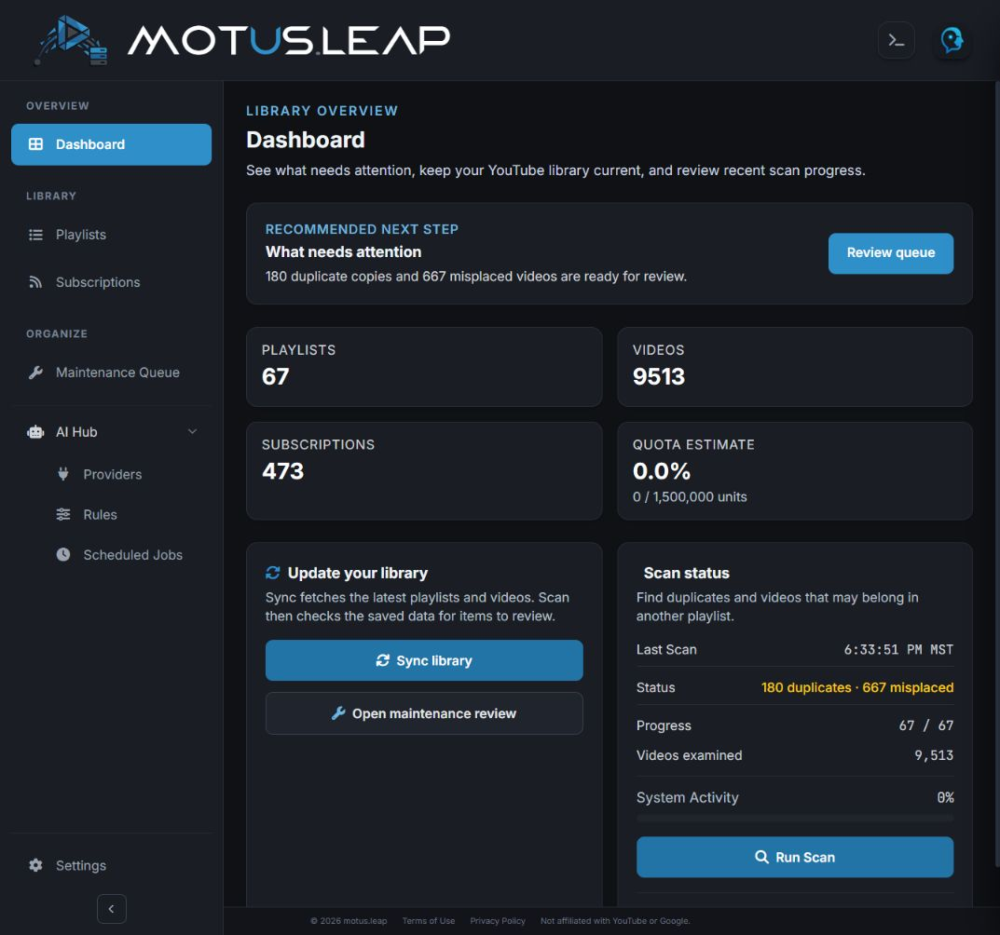
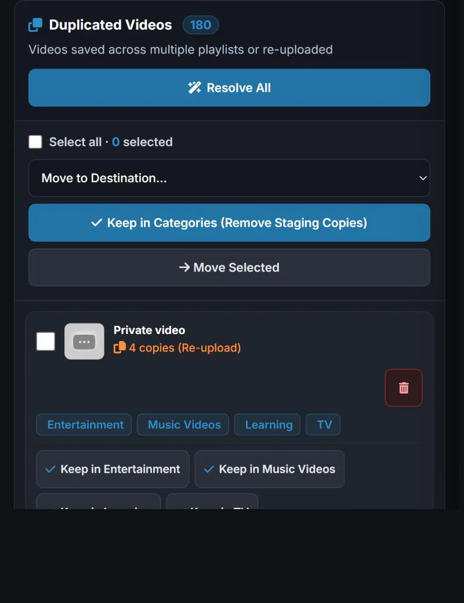
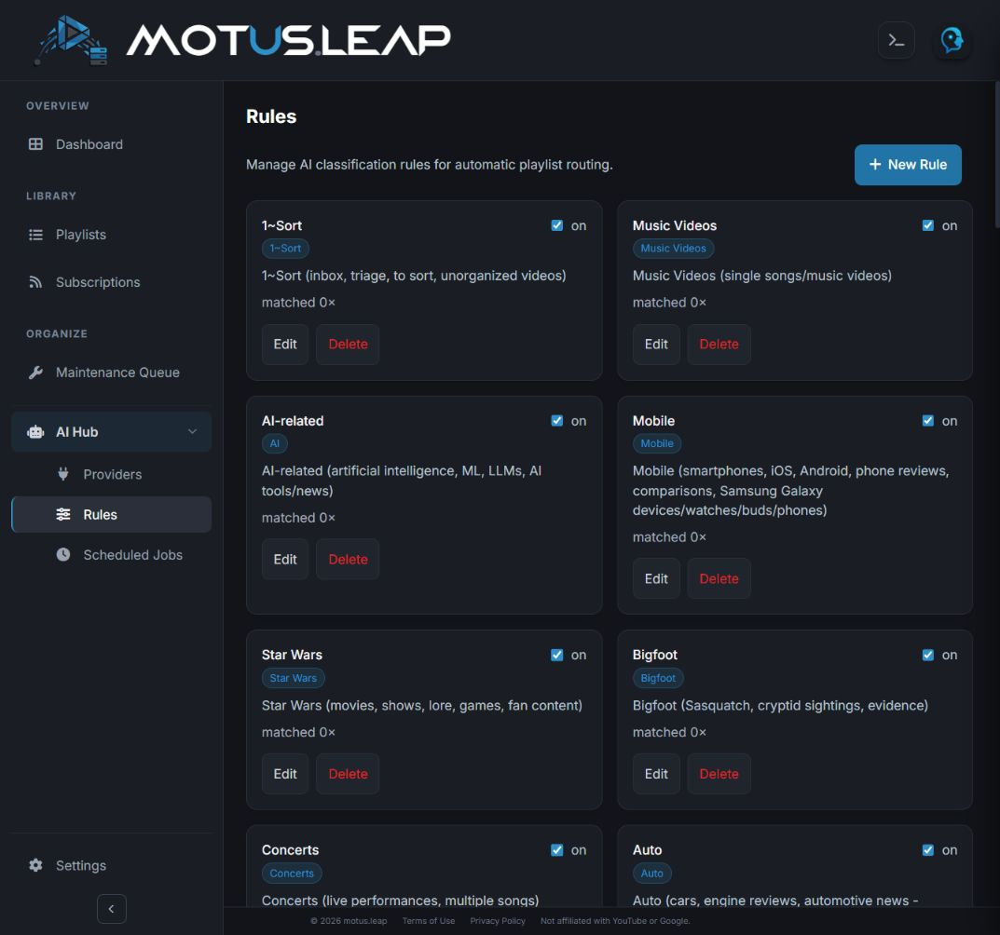
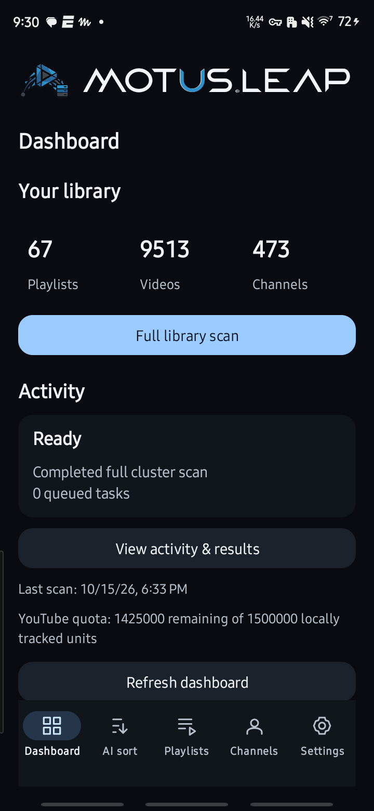
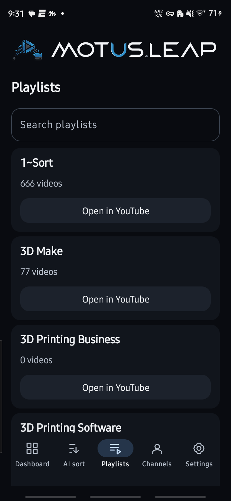
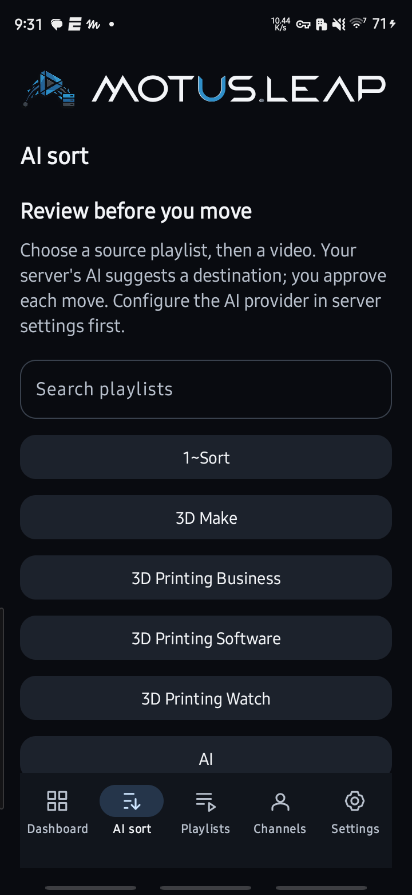
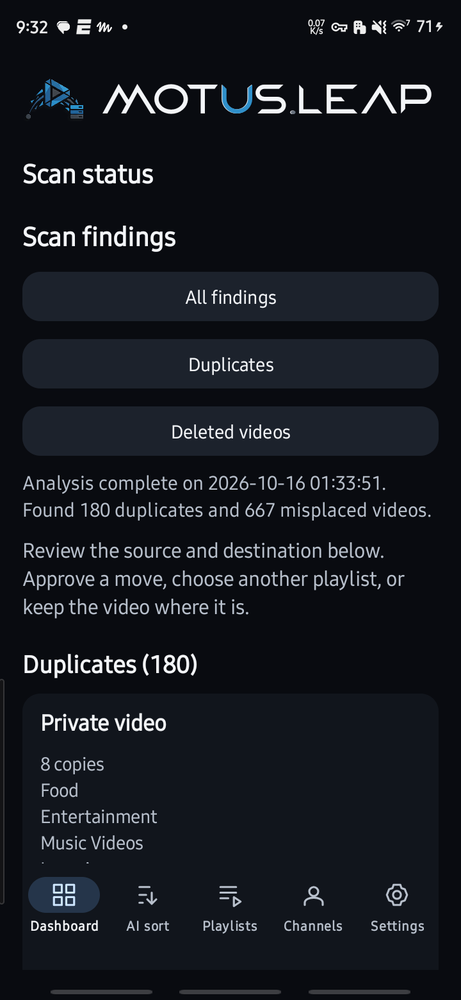

Web workspace + Android companion
A place for every video.
Save videos by the dozen. motus.leap is a self-hosted web workspace that brings order to your YouTube™ library with channel-to-playlist rules and AI suggestions, plus an Android app to take it with you. Nothing moves until you confirm it.
Development build Runs on your own server with Google sign-in. Android app 0.5.3 available.
- 14:02
- 9:41
- 1:02:10
- 22:17
- 18:30
- 27:05
- 10:00
- 6:48
- 3:12
- 12
- 8
- 31
- 19
Run it all from the web workspace.
The web workspace is the heart of motus.leap. Open it in any browser to see your library, set up channel rules and AI providers, run scans and work through the review queue. These are actual screens from a signed-in library of 67 playlists.

Dashboard What needs attention, library totals and scan status. 
Maintenance queue Review duplicates and misplaced videos before anything moves. 
AI rules Describe what belongs in each playlist for your AI provider.


Actual screens, captured October 2026. Counts and settings belong to the publisher’s own library.
Take it with you on Android.
The Android companion connects to the same server, so your library, scans and reviews come with you. Check totals, start a scan or confirm a suggested move from your phone.

Dashboard Library totals, scan controls and server activity. 
Playlists Search your collection and open a playlist in YouTube™. 
AI sort Choose a source playlist to begin reviewing a video. 
Scan findings Inspect duplicates and misplaced videos from the last scan.


Actual Android screens from one connected library at capture time. Counts and results vary by account.
Two ways to sort. One organised library.
Use channel rules for repeatable routing. Use AI when a video needs a closer look.
Set the destination once. Let channel rules do the routing.
When you regularly save videos from the same creators, you shouldn’t have to choose the same playlist every time. A channel-to-playlist rule connects a channel to the playlist its videos belong in.
Create and edit rules in the web workspace and keep familiar channels on a predictable path. The Android companion shows your rules too.
- New video from Wanderline
- Rule Wanderline → Travel
- Travel playlist
AI proposes. You decide.
For everything else, the server sends a video’s title, channel and description to your AI provider and gets back a suggested playlist. Each suggestion waits for you. Try it: this board runs in your browser with example videos and never contacts YouTube.
Waiting for review
3-
A walk through Kyoto
Suggested destination Travel & places
-
Building a better workspace
Suggested destination Workshop
-
The railway journey
Suggested destination Travel & places
All caught up. Nothing is waiting for review.
Travel & places
2Lisbon by tram
Night ferry to Stockholm
Workshop
1Sharpening a chisel
Example board. Your YouTube account is not connected here.
Find the videos that need attention.
Run a full library scan, or focus on duplicates and misplaced videos. Work runs on your server, and queued work stays separate from completed work, so you always know what has actually happened.
Library scan
Reads your playlists and channels so the dashboard reflects what is really in your collection.
CompletedDuplicate scan
Finds the same video sitting in more than one place.
RunningMisplaced-video scan
Flags videos that look like they belong in a different playlist.
QueuedAI suggestions
Proposes a destination for each flagged video. You review every one before it moves.
Needs review
States shown are examples. Queued means accepted for processing; it does not mean completed.
Your service. Your connected library.
Your server runs the web workspace and does the work. Use it from a browser, the Android app or both.
In your browser and on your phone
Web workspace & Android app
Manage rules, scans and reviews in the web workspace from any browser. The Android app gives you the same library on the go. Both use Google sign-in.
On a server you configure
motus.leap server
Stores the YouTube™ credentials, runs background jobs and connects to your chosen AI provider. It serves the web workspace and must be running and reachable over HTTPS.
Authorised separately
YouTube & AI provider
Signing in to motus.leap and authorising the backend to access YouTube™ are separate steps. AI sorting sends video titles, channels and descriptions to the provider you configure.
The Android app needs a running motus.leap server; downloading the APK alone does not create one or authorise a YouTube account.
A little setup. A more useful library.
Prepare the backend
Set up the motus.leap server with HTTPS, configure Google sign-in and connect your YouTube™ account. Add an AI provider if you want sorting suggestions.
Connect the Android app
Install the APK on Android 8.0 or newer, enter the server address and continue with Google in your system browser.
Explore before making changes
Check the dashboard and browse your playlists. Queue a scan, inspect its findings and confirm only the changes you want.
Before you install.
Will AI sorting move videos automatically?
No. Every suggestion waits for your review, and a video moves only after you confirm the destination. A suggestion that doesn’t match a known playlist cannot start a move.
Do I need the Android app?
No. Everything runs in the web workspace in your browser. The Android app is an optional companion that connects to the same server.
Does the APK include a server?
No. The APK connects to a motus.leap backend that you configure and run separately, reached over HTTPS. The setup guide covers the server, Google sign-in and YouTube™ authorisation.
Can I use it without an AI provider?
Yes, with limits. Library browsing, channel rules and scans use the backend’s YouTube™ connection. AI suggestions need a configured provider.
What should I expect from this release?
Android 0.5.3 is a signed release for Android 8.0 or newer; the server is still in active development. YouTube™ permissions, API quota, server availability and provider settings affect which operations can run, so check the operation results to confirm changes.
Is motus.leap affiliated with YouTube or Google?
No. motus.leap is an independent project published by Atomic 22 Industries.
Keep collecting. Bring order with you.
Start with the web workspace on your own server, then add the Android app if you want it on your phone. Development build.
1. Web workspace
Set up the motus.leap server and open the workspace in your browser.
Set up the web workspace